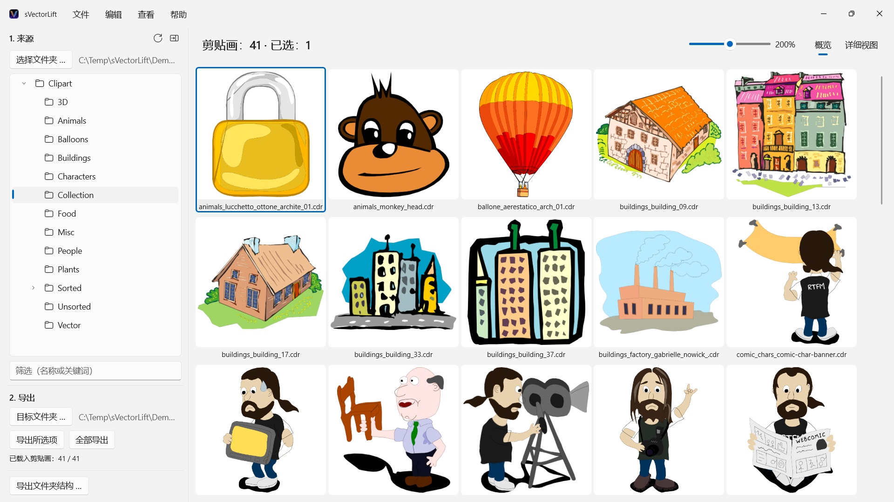
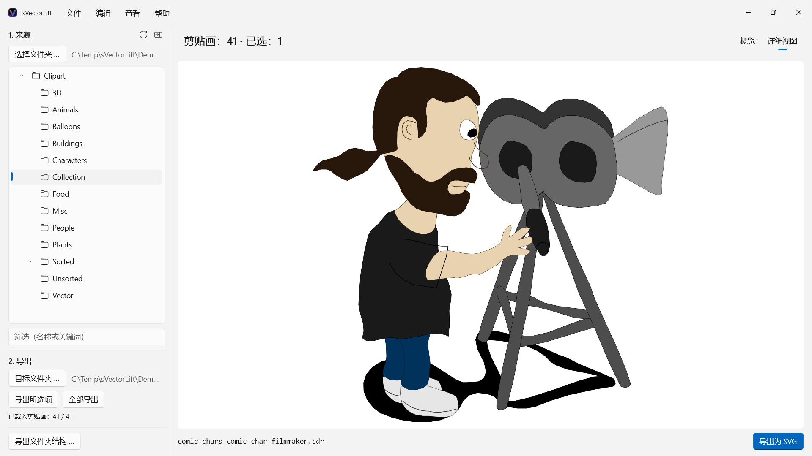

CorelDRAW 光盘上成千上万张复古剪贴画，被锁在几乎没有程序还能打开的文件格式里。sVectorLift 让你一眼看遍整个收藏，并把它们变成今天就能用的真正 SVG。
 观看视频 – YouTube 上 3 分钟（英语，中文字幕）
观看视频 – YouTube 上 3 分钟（英语，中文字幕）


书架上的某个角落，放着一张多年前买下的剪贴画光盘。文件都还在，可电脑上几乎没有程序还打得开，能让你一眼看遍整个收藏的就更少了。
支持的语言（25）：Deutsch · English · Español · Français · Italiano · Nederlands · Português (Brasil) · Português (Portugal) · Svenska · Norsk · Suomi · Polski · Čeština · Hrvatski · Magyar · Română · Türkçe · Русский · Українська · فارسی · ไทย · 日本語 · 한국어 · 简体中文 · 繁體中文
App 跟随 Windows 的显示语言。
sVectorLift 让这些图重新派上用场。它把每一幅图重新构建为真正的 SVG：任意尺寸都清晰、可编辑，可以直接用在 Illustrator、Affinity、Inkscape、Figma 里，或者放到你的网站上。不只是又能看见，而是又能使用。这就是名字里“lift”的意思：把复古的矢量图，提到你今天所用工具的水准上。
它能打开什么
- CorelDRAW 文档（.cdr），第 6 版至第 9 版
- Corel Binary Meta File（.cmx）——包括其他工具拒绝读取的早期 CDRX
- Windows Metafile（.wmf）
- Computer Graphics Metafile（.cgm）
- QuickDraw 3D Metafile（.3dm、.3dmf），渲染为图像
- Scalable Vector Graphics（.svg），直接显示
许多扩展名为 .cdr 的文件其实并不是 CorelDRAW 文档，而是 CMX——常见的转换器正是栽在这里。sVectorLift 两者都读。
sVectorLift 是为剪贴画收藏而做的：图样、符号、插图。它不是排版软件，也无意重现多页手册或印刷稿。
真正的矢量转换
这里不是把预览缩略图翻拍一遍。sVectorLift 读的是图本身：路径与贝塞尔曲线、填充色、渐变、轮廓与虚线样式、图案与纹理填充、内嵌照片以及文本对象。出来的是真正的矢量数据，可以缩放、改色、编辑，而不是一张图的照片。
纯位图则导出为 PNG，这样什么都不会丢。
需要的不是矢量图而是图像？“导出为 PNG”和“导出为 JPG”可将任何图（包括 SVG 文件）渲染为图像，尺寸就是你在“设置”中指定的大小。
浏览你的收藏
- 覆盖整个收藏的文件夹树，含子文件夹
- 清晰矢量缩略图的网格，大小可用滑块无级调节
- 详细视图——用方向键在文件夹里翻看
- 按名称或关键词筛选
- 与文件资源管理器一样的多选：单击、Ctrl+单击、Shift+单击、框选、Ctrl+A
- 从文件资源管理器直接打开单个文件（“打开方式”或双击）
- 最近使用的文件夹会记住你停下的位置：子文件夹和选中的文件
- 一步导出所选项目或整个文件夹
- 一次转换整个文件夹结构（含子文件夹）——目标文件夹中保留原有结构
- 重命名、在文件资源管理器中显示、移到回收站
- 拖放到文件夹树中的文件夹来整理收藏：遵循文件资源管理器的规则，按住 Ctrl 复制，按住 Shift 移动，可用 Ctrl+Z 撤消；也可与文件资源管理器互相拖放
又快又省心
缩略图只为你正在看的内容计算，在后台进行并带缓存。大文件夹立刻打开，而不是先卡上几分钟去处理成千上万个文件。
一切都留在你的电脑上。没有网络连接，没有账户，不收集数据。
CorelDRAW 是 Corel Corporation 的商标。sVectorLift 是独立应用，与 Corel 无从属关系，也未获其背书。
- 需要 Windows 11 或更高版本
- 支持 24 种语言
- 技术支持： SwiftAppsBavaria@gmx.net
- 隐私政策